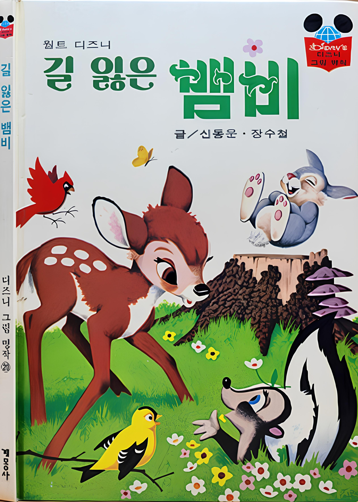
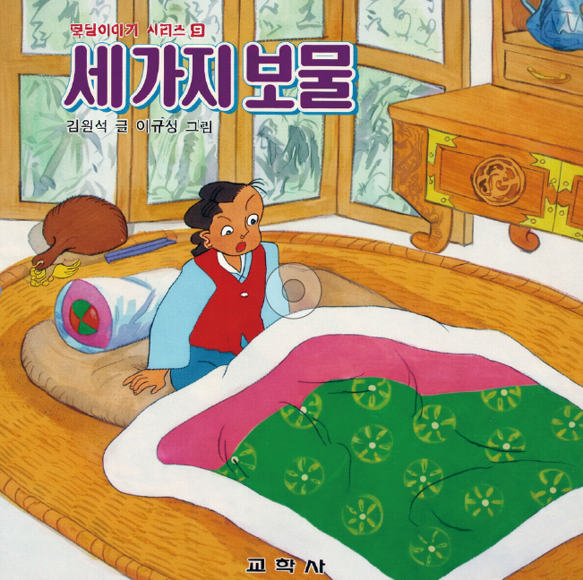
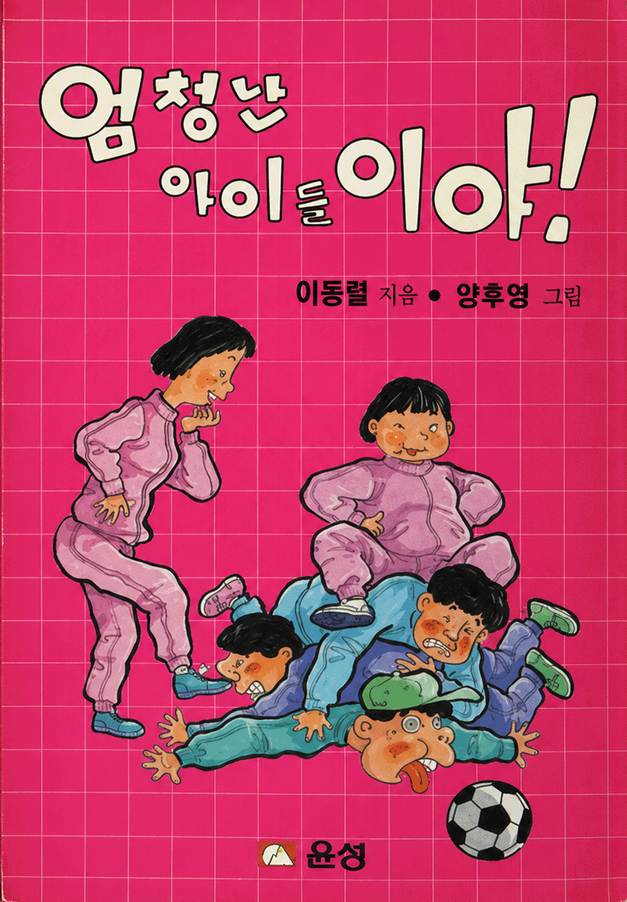
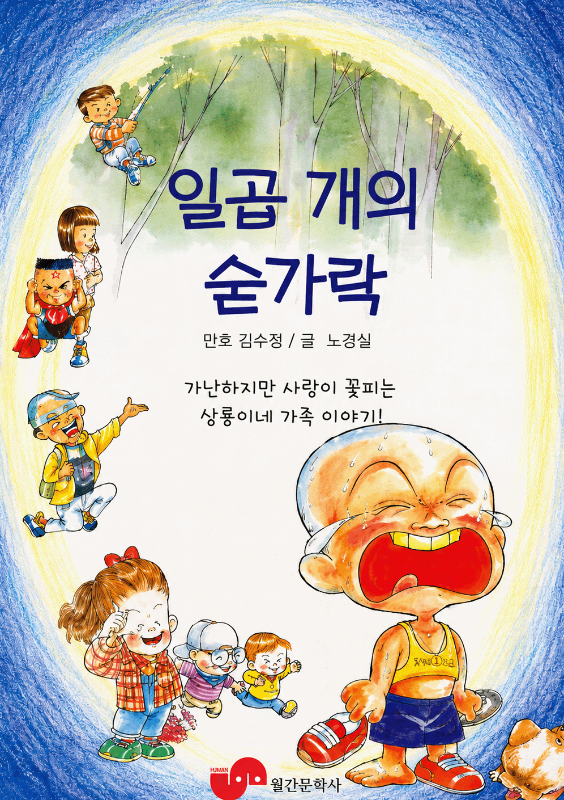
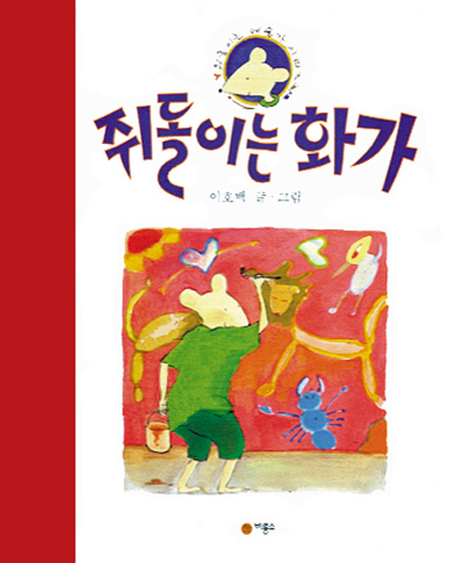
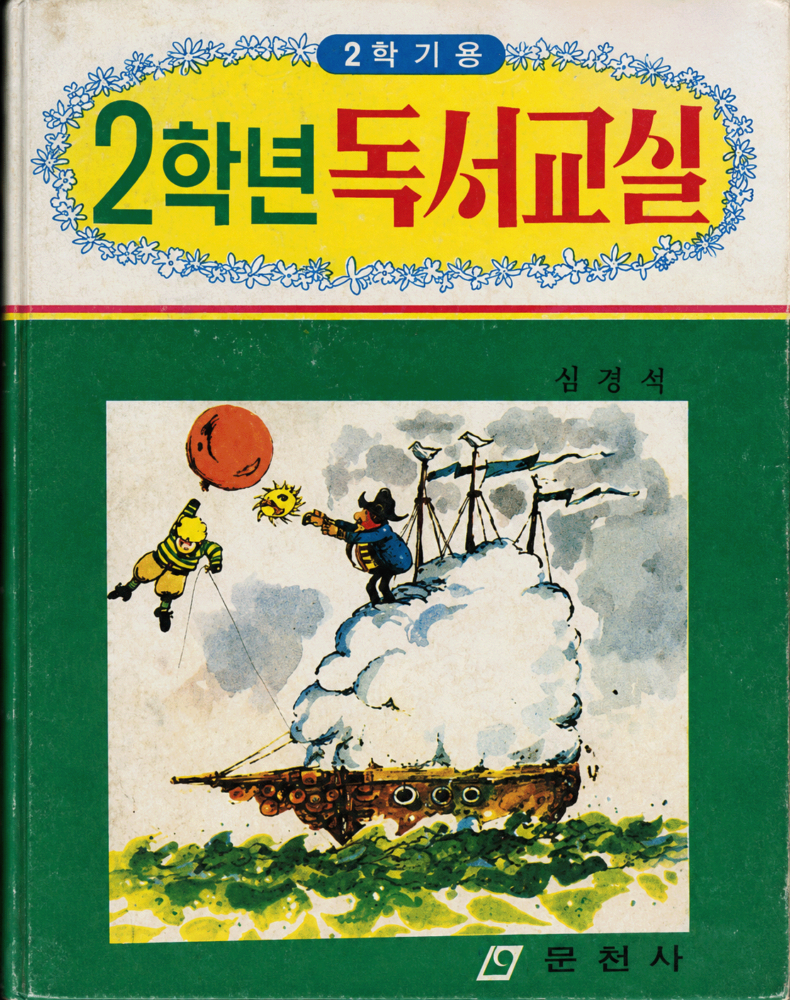
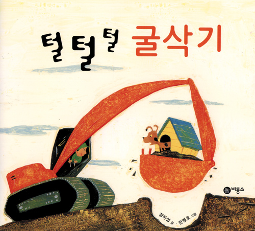
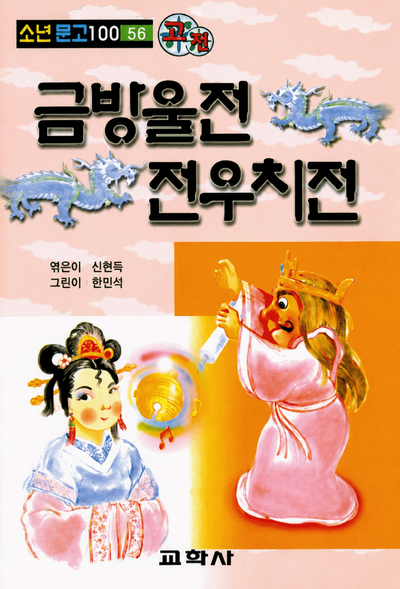
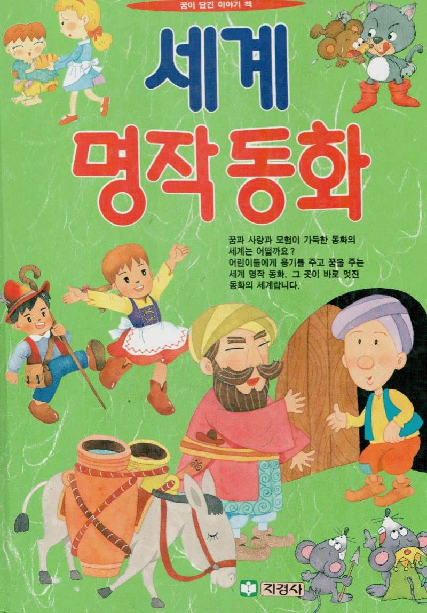
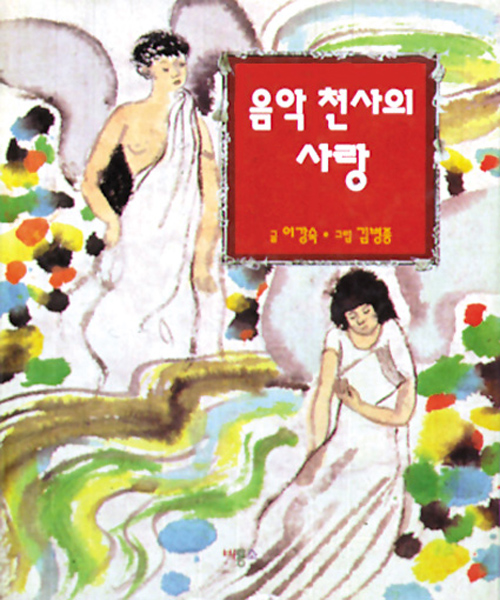

글 신동운 / 그림 장수철
출판사 : 계묭사
출간일 : 1993년 05월 29일
사진 출처 : 북코아_구판)월트 디즈니
그림명작 20) 길 잃은 뱀비 1993년판

글 김원석 / 그림 이규성
출판사 : 교학사
출간일 : 1990년 10월 1일
사진 출처 : 교보문고_세가지 보물

글 이동렬 / 그림 양후영
출판사 : 윤성
출간일 : 1991년 7월 1일
사진 출처 : 옛날물건 홈페이지
_1991년 이동렬, 양후영 엄청난 아이들이

글 노경실 / 그림 김수정
출판사 : 대교출판
출간일 : 1998년 7월 31일
사진 출처 : 예스24_일곱 개의 숟가

글,그림 이호백
출판사 : 비룡소
출간일 : 1996년 8월 25일
사진 출처 : 비룡소_쥐돌이는 화가

글 심경석
출판사 : 문천사
출간일 : 1979년 10월 15일
사진 출처 : 세이북_2학년 2학기용 독서교실

글 정하섭 / 그림 한병호
출판사 : 비룡소
출간일 : 1997년 4월 20일
사진 출처 : 비룡소_털털털 굴삭

글 신현득 / 그림 한민석
출판사 : 교학사
출간일 : 1991년 4월 1일
사진 출처 : 교보문고_금방울전 전우치전

글 안데르센 외 / 그림 이명선, 박요한, 박현자, 황명희 / 엮은이 신영애
출판사 : 지경사
출간일 : 1996년 5월 15일
사진 출처 : 네이버 블로그
_히비스커스(2023.1.19),
전형적인 90년대 그림책(지경사 세계명작동화)

글 이강숙 / 그림 김병종
출판사 : 비룡소
출간일 : 1995년 6월 30일
사진 출처 : 비룡소_음악 천사의 사랑